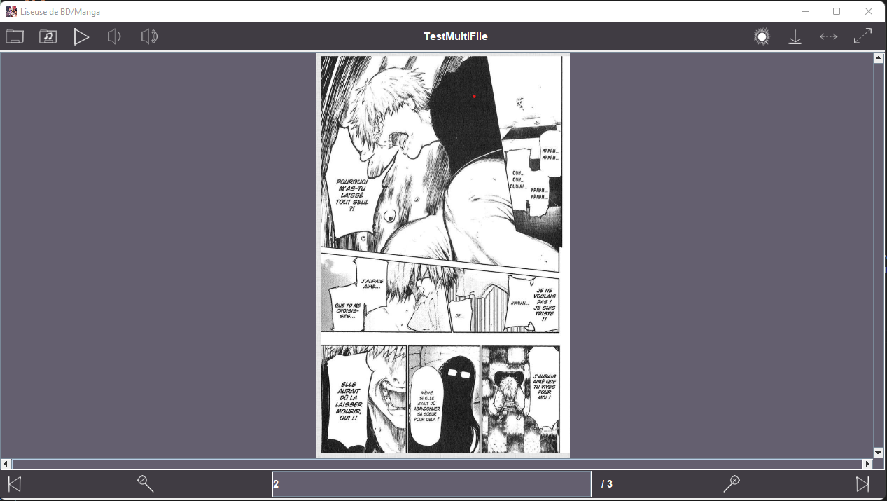
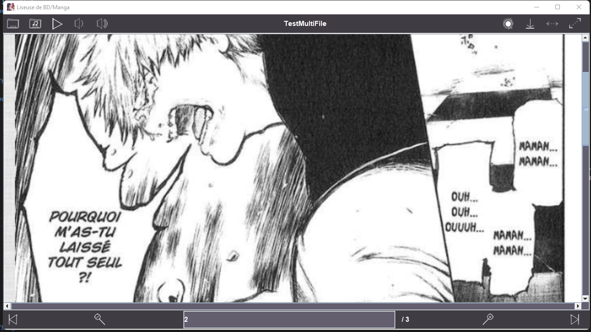

Projet JAVA
Présentation
Ce projet JAVA a été mener en Binôme lors du début de ma 2e année
Contexte
Durant 2 mois on a du développer avec JAVA une application permettant de lire des fichier .cbz pour pouvoir en faire la l'écture.
Développement
Le développement de ce projet m'as permis dans apprendre plus sur le JAVA et sur la POO d'une application. Etant en avance lors du développement de ce projet, on a décidé de rajouter un systeme de lecture de music pendant que l'on lit notre livre.
Quelques images du projet
interface :

mode nuit :

lecture simple image :
lecture avec mode fullscreen de l'image :
